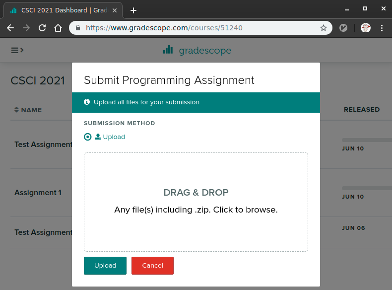
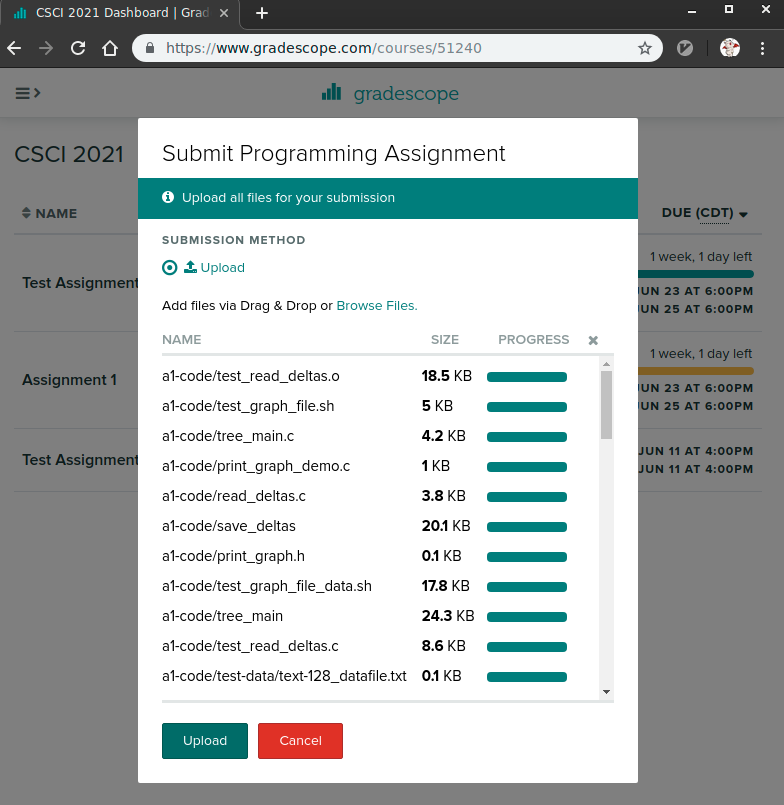
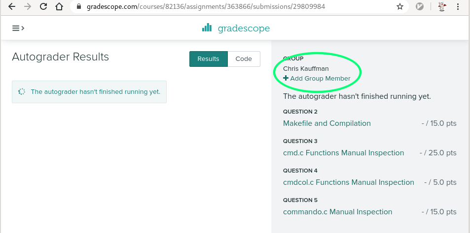

CSCI 4061 Project 1: Going Commando
- Due: 11:59pm Mon 2/22/2021
- Approximately 10.0% of total grade
- Submit to Gradescope (Submission will open soon)
- Projects may be done in groups of 1 or 2. Indicate groups in the
GROUP-MEMBERS.txtfile and on Gradescope when submitting - No additional collaboration with other students is allowed. Seek help from course staff if you get stuck for too long.
CODE DISTRIBUTION: p1-code.zip
CHANGELOG:
- Thu Feb 4 10:41:02 AM CST 2021
The missing
GROUP_MEMBERS.txthas been added top1-code.zip.Post 27 reported some errors associated with test output which relies on permissions of files in the
test_data/directory. This can happen whenunzip'ing files where some files are marked as executable sols -Flists them asgettysburg.txt*(with the*symbol affixed). The providedtest_Makefilehas been updated to correct for this by changing these permissions and the tests should now run normally. Download a fresh copy oftest_Makefileand replace the old one if needed.
1 Introduction: A Simple Shell
Command line shells allow one to access the capabilities of a computer using simple, interactive means. Type the name of a program and the shell will bring it into being, run it, and show output. Familiarizing yourself with the basics of shell job management will make work on terminal-only machines much more palatable.
The goal of this project is to write a simple, quasi-command line
shell called commando. The shell will be less functional in many
ways from standard shells like bash (default on most Linux
machines), but will have some properties that distinguish it such as
the ability to recall output for any child process. Like most
interesting projects, commando uses a variety of system calls
together to accomplish its overall purpose. Most of these will be
individually discussed in lecture but the interactions between them is
what inspires real danger and romance.
Completing commando will educate an implementer on the following
systems programming topics.
- Basic C Memory Discipline: A variety of strings and structs are allocated and de-allocated during execution which will require attention to detail and judicious use of memory tools like Valgrind.
- fork() and exec(): Text entered that is not recognized as a built-in is treated as an command (external program) to be executed. This spawns a child process which executes the new program.
- Pipes, dup2(), read(): Rather than immediately print child output to the screen, child output is redirected into pipes and then retrieved on request by commando.
- wait() and waitpid(), blocking and nonblocking: Child processes usually take a while to finish so the shell will check on their status every so often
2 Download Code and Setup
As in labs, download the code pack linked at the top of the page. Unzip this which will create a folder and create your files in that folder.
| File | State | Notes |
|---|---|---|
GROUP_MEMBERS.txt |
Edit | Fill in names of group members to indicate partnerships |
Makefile |
CREATE | Build project, run tests |
commando.c |
CREATE | main() function for commando interactive shell |
cmd.c |
CREATE | Functions to deal with the cmdt struct |
cmdcol.c |
CREATE | Functions to deal with the cmdcolt struct |
commando.h |
Provided | Header file which contains required structs, defines, and prototypes |
util.c |
Provided | Utility methods for creating argv[] arrays and pausing execution |
test_Makefile |
Testing | Testing make targets, place include test_Makefile at the END of your Makefile |
test_cmd.c |
Testing | Tests specific C function calls for cmd.c / cmdcol.c |
test_cmd.org |
Testing | Test definitions for function tests |
test_commando.org |
Testing | Test definitions for commando main tests |
testy |
Testing | Test running script |
test_standardize_pids |
Testing | Filter to standardize PID printing during testing |
test-results/ |
Testing | Directory containing temporary files for testing, removed via make clean-tests |
00_ID.txt |
Testing | Assignment/course name used for testing |
test_data/ |
Data | Directory containing below files used in testing |
3K.txt |
Data | Large-ish file with numbers |
gettysburg.txt |
Data | Gettysburg address |
print_args.c |
Data | Program that prints command line arguments |
quote.txt |
Data | Quote from Edsger Dijkstra |
README |
Data | Description of directory |
sleep_print.c |
Data | Program which sleeps then prints |
stuff/ |
Data | Subdirectory with oddities for doing listings |
table.sh |
Data | Shell scrip which prints table of squares/cubes |
3 Opening Demo
The best way to get a sense of any program is to see how it
behaves. In the below demonstration, commando is first built then
started. Input is entered in commando after its prompt on lines that
look like
@> commands here
Other lines contain output from the program. To the right of the demo
after the # symbol are comments on what is happening.
lila [a1-code]% make # Build commando gcc -Wall -g -c commando.c gcc -Wall -g -c cmd.c gcc -Wall -g -c cmdcol.c gcc -Wall -g -c util.c gcc -Wall -g -o commando commando.o cmd.o cmdcol.o util.o lila [a1-code]% commando # Start commando, prompt is @> @> help # Show available built-ins COMMANDO COMMANDS help : show this message exit : exit the program list : list all jobs that have been started giving information on each pause nanos secs : pause for the given number of nanseconds and seconds output-for int : print the output for given job number output-all : print output for all jobs wait-for int : wait until the given job number finishes wait-all : wait for all jobs to finish command arg1 ... : non-built-in is run as a job # Runs a command as a child process @> list JOB #PID STAT STR_STAT OUTB COMMAND @> ls test_data/ # Run ls on test_data/ directory @> list # ls now present as a running job JOB #PID STAT STR_STAT OUTB COMMAND 0 #26532 -1 RUN -1 ls test_data/ @!!! ls[#26532]: EXIT(0) # @!!! is an alert: job finished @> list # list again: see exit and output size JOB #PID STAT STR_STAT OUTB COMMAND 0 #26532 0 EXIT(0) 145 ls test_data/ @> output-for 0 # show output for job 0 (ls) @<<< Output for ls[#26532] (145 bytes): ---------------------------------------- 3K.txt # actual output of ls actual.tmp diff.tmp expect.tmp gettysburg.txt print_args print_args.c quote.txt README sleep_print.c stuff table.sh temp.tmp valgrind.tmp ---------------------------------------- @> ls -l test_data/ # run another child job @> list # now have two jobs JOB #PID STAT STR_STAT OUTB COMMAND # one finished one running 0 #26532 0 EXIT(0) 145 ls test_data/ 1 #26908 -1 RUN -1 ls -l test_data/ @!!! ls[#26908]: EXIT(0) # alert: job finished @> list # listing shows completed jobs JOB #PID STAT STR_STAT OUTB COMMAND 0 #26532 0 EXIT(0) 145 ls test_data/ 1 #26908 0 EXIT(0) 855 ls -l test_data/ # output should be larger due to -l option @> output-for 1 # show output for job 1 @<<< Output for ls[#26908] (855 bytes): ---------------------------------------- total 204 -rw-r----- 1 kauffman kauffman 13893 Sep 27 2017 3K.txt -rw-rw---- 1 kauffman kauffman 14834 Feb 5 12:13 actual.tmp -rw-rw---- 1 kauffman kauffman 30921 Feb 5 12:13 diff.tmp -rw-rw---- 1 kauffman kauffman 14834 Feb 5 12:13 expect.tmp -rw-rw---- 1 kauffman kauffman 1511 Sep 18 2017 gettysburg.txt -rwxrwx--- 1 kauffman kauffman 16576 Feb 5 12:14 print_args -rw-rw---- 1 kauffman kauffman 218 Sep 11 2017 print_args.c -rw-rw---- 1 kauffman kauffman 125 Sep 18 2017 quote.txt -rw-rw---- 1 kauffman kauffman 298 Feb 1 11:13 README -rw-rw---- 1 kauffman kauffman 346 Sep 26 2017 sleep_print.c drwxrwx--- 2 kauffman kauffman 4096 Feb 4 21:17 stuff -rwxrwx--- 1 kauffman kauffman 427 Sep 26 2017 table.sh -rw-rw---- 1 kauffman kauffman 14926 Feb 5 12:13 temp.tmp -rw-rw---- 1 kauffman kauffman 1656 Feb 5 12:14 valgrind.tmp ---------------------------------------- @> output-for 0 # output for job 0, permanently available @<<< Output for ls[#26532] (145 bytes): # despite having run othe jobs ---------------------------------------- 3K.txt actual.tmp diff.tmp expect.tmp gettysburg.txt print_args print_args.c quote.txt README sleep_print.c stuff table.sh temp.tmp valgrind.tmp ---------------------------------------- @> grep Lincoln test_data/gettysburg.txt # start another job with grep @> # press enter again, no input at prompt @!!! grep[#27113]: EXIT(0) # alert: job finished @> list # listing shows all three jobs JOB #PID STAT STR_STAT OUTB COMMAND 0 #26532 0 EXIT(0) 145 ls test_data/ 1 #26908 0 EXIT(0) 855 ls -l test_data/ 2 #27113 0 EXIT(0) 16 grep Lincoln test_data/gettysburg.txt @> output-all # output all jobs in the listing @<<< Output for ls[#26532] (145 bytes): ---------------------------------------- 3K.txt # output for job 1 actual.tmp diff.tmp expect.tmp gettysburg.txt print_args print_args.c quote.txt README sleep_print.c stuff table.sh temp.tmp valgrind.tmp ---------------------------------------- @<<< Output for ls[#26908] (855 bytes): ---------------------------------------- total 204 # output for job 2 -rw-r----- 1 kauffman kauffman 13893 Sep 27 2017 3K.txt -rw-rw---- 1 kauffman kauffman 14834 Feb 5 12:13 actual.tmp -rw-rw---- 1 kauffman kauffman 30921 Feb 5 12:13 diff.tmp -rw-rw---- 1 kauffman kauffman 14834 Feb 5 12:13 expect.tmp -rw-rw---- 1 kauffman kauffman 1511 Sep 18 2017 gettysburg.txt -rwxrwx--- 1 kauffman kauffman 16576 Feb 5 12:14 print_args -rw-rw---- 1 kauffman kauffman 218 Sep 11 2017 print_args.c -rw-rw---- 1 kauffman kauffman 125 Sep 18 2017 quote.txt -rw-rw---- 1 kauffman kauffman 298 Feb 1 11:13 README -rw-rw---- 1 kauffman kauffman 346 Sep 26 2017 sleep_print.c drwxrwx--- 2 kauffman kauffman 4096 Feb 4 21:17 stuff -rwxrwx--- 1 kauffman kauffman 427 Sep 26 2017 table.sh -rw-rw---- 1 kauffman kauffman 14926 Feb 5 12:13 temp.tmp -rw-rw---- 1 kauffman kauffman 1656 Feb 5 12:14 valgrind.tmp ---------------------------------------- @<<< Output for grep[#27113] (16 bytes): ---------------------------------------- Abraham Lincoln # output for job 3 ---------------------------------------- @> grep Abradolf test_data/gettysburg.txt # run one more command @> @!!! grep[#27514]: EXIT(1) # grep exit code 1 when string not found @> list JOB #PID STAT STR_STAT OUTB COMMAND 0 #26532 0 EXIT(0) 145 ls test_data/ 1 #26908 0 EXIT(0) 855 ls -l test_data/ 2 #27113 0 EXIT(0) 16 grep Lincoln test_data/gettysburg.txt 3 #27514 1 EXIT(1) 0 grep Abradolf test_data/gettysburg.txt @> output-for 3 # show output @<<< Output for grep[#27514] (0 bytes): # not much to see ---------------------------------------- ---------------------------------------- @> exit # exit commando lila [a1-code]% # returns to normal shell prompt
Things to Note
- The child processes (jobs) that
commandostarts do not show any output by default and run concurrently with the main process which gives back the@>prompt immediately. This is different from a normal shell such asbashwhich starts jobs in the foreground, shows their output immediately, and will wait until a job finishes before showing the command prompt for additional input. - The output for all jobs is saved by
commandoand can be recalled at any time using theoutput-for intbuilt-in command. - Not all of the built-in commands are shown in the demo but each will be discussed in later sections.
- It should be clear that
commandois not a full shell (no signals, built-in scripting, or pipes), but it is a mid-sized project which will take some organization. Luckily, this document prescribes a simple architecture to make the coding manageable.
4 Overall Architecture
4.1 What Needs to be Implemented
commando is divided into the following parts which must be
implemented to complete the project. Each part corresponds to a single
C file.
cmd_tcommand data structureThe
cmd_ttype is defined in thecommandoheader file. It is intended to encapsulate the state of a running or completed child process. Fields within it describe aspects such as the name of the command being run, arguments to it, its exit status, a pipe for communication withcommandoprocess, and an output buffer.The functions in
cmd.cmanipulate the data structure. Basic functions for allocating and de-allocating it are present as well as functions to start a process running with the program and arguments contained with acmd_tand update the data structure based on the state of the job.Within
commando, instances ofcmd_twill be created each time a job is run and commands such asoutput-forandwait-forwill need to access and alter the fields ofcmd_tinstances.cmdcol_tcollection ofcmd_tIt should be clear from the demos that
commandotracks multiple child processes / jobs. This multiplicity is simplified somewhat with a data structure to add and iterate through all child jobs. This is the role ofcmdcol_t: it's primary fields are an array ofcmd_tinstances and a size indicating how many are present. The array is fixed size so there is a maximum number of child processes which can be handled defined in thecommando.hheader withMAX_CMDS.The functions in
cmdcol.cdo basic manipulation such as adding, producing output for all commands and updating the state of all commands. There are no required allocation or de-allocation routines but they may be added if they seem useful.commando main()functionThe file
commando.cwill contain amain()function which loops over input provided by the user either interactively or via standard input as is done in the automated tests. After setup, the program executes an infinite loop until no more input is available.- Print the
@>prompt and parse input - Determine what action to take: built-in or start a job
- Check for updates to the state of jobs and print alerts for changes
Some input may cause new
cmd_tinstances to be allocated for child processes. These are added into acmdcol_tinstance for tracking.- Print the
4.2 What's Already Done
Examine the provided files closely as they give some insight into what work is already done.
commando.hcan be included in most files to make programs aware of the data structures and required functions. It contains documentation of the central data structures.util.ccontains a few functions that are tricky but not central to our study of systems programming. To save time, these are provided.parse_into_tokens()is useful createargv[]arrays incmd_tstructures. It is similar to functions in some textbooks and makes use of the ever-dangerousstrtok()function.pause_for()causes a program to sleep for a period of time. This allowscommandoto suspend execution for a while so that child processes can finish.
4.3 Create a Makefile
Create a Makefile which has at least the following targets.
makeandmake commando: builds thecommandoapplication, this should be the default target or be included with the default target.make cleanwill remove all compiled.ofiles and programs includingcommandoTest Targets: at the END of your Makefile add the directive
include test_Makefile
which will enable testing targets described in the Automatic Testing Section.
5 cmd_t Data Type
Information about a child process / job / command in commando is
stored in the cmd_t struct which has the following form from
commando.h.
// cmd_t: struct to represent a running command/child process.
typedef struct {
char name[NAME_MAX+1]; // name of command like "ls" or "gcc"
char *argv[ARG_MAX+1]; // argv for running child, NULL terminated
pid_t pid; // PID of child
int out_pipe[2]; // pipe for child output
int finished; // 1 if child process finished, 0 otherwise
int status; // return value of child, -1 if not finished
char str_status[STATUS_LEN+1]; // describes child status such as RUN or EXIT(..)
void *output; // saved output from child, NULL initially
int output_size; // number of bytes in output
} cmd_t;
This section lists the functions that are required to be implemented
for to manipulate cmd_t's and how they should behave. Additional
functions and fields may be added if implements see good cause for
it but the reference implementation includes only those listed.
5.1 Required Functions
// cmd.c: functions related the cmd_t struct abstracting a // command. Most functions maninpulate cmd_t structs. cmd_t *cmd_new(char *argv[]); // Allocates a new cmd_t with the given argv[] array. Makes string // copies of each of the strings contained within argv[] using // strdup() as they likely come from a source that will be // altered. Ensures that cmd->argv[] is ended with NULL. Sets the name // field to be the argv[0]. Sets finished to 0 (not finished yet). Set // str_status to be "INIT" using snprintf(). Initializes the remaining // fields to obvious default values such as -1s, and NULLs. void cmd_free(cmd_t *cmd); // Deallocates a cmd structure. Deallocates the strings in the argv[] // array. Also deallocats the output buffer if it is not // NULL. Finally, deallocates cmd itself. void cmd_start(cmd_t *cmd); // Forks a process and executes command in cmd in the process. // Changes the str_status field to "RUN" using snprintf(). Creates a // pipe for out_pipe to capture standard output. In the parent // process, ensures that the pid field is set to the child PID. In the // child process, directs standard output to the pipe using the dup2() // command. For both parent and child, ensures that unused file // descriptors for the pipe are closed (write in the parent, read in // the child). void cmd_update_state(cmd_t *cmd, int block); // If the finished flag is 1, does nothing. Otherwise, updates the // state of cmd. Uses waitpid() and the pid field of command to wait // selectively for the given process. Passes block (one of DOBLOCK or // NOBLOCK) to waitpid() to cause either non-blocking or blocking // waits. Uses the macro WIFEXITED to check the returned status for // whether the command has exited. If so, sets the finished field to 1 // and sets the cmd->status field to the exit status of the cmd using // the WEXITSTATUS macro. Calls cmd_fetch_output() to fill up the // output buffer for later printing. // // When a command finishes (the first time), prints a status update // message of the form // // @!!! ls[#17331]: EXIT(0) // // which includes the command name, PID, and exit status. char *read_all(int fd, int *nread); // Reads all input from the open file descriptor fd. Assumes // character/text output and null-terminates the character output with // a '\0' character allowing for printf() to print it later. Stores // the results in a dynamically allocated buffer which may need to // grow as more data is read. Uses an efficient growth scheme such as // doubling the size of the buffer when additional space is // needed. Uses realloc() for resizing. When no data is left in fd, // sets the integer pointed to by nread to the number of bytes read // and return a pointer to the allocated buffer. Ensures the return // string is null-terminated. Does not call close() on the fd as this // is done elsewhere. void cmd_fetch_output(cmd_t *cmd); // If cmd->finished is zero, prints an error message with the format // // ls[#12341] not finished yet // // Otherwise retrieves output from the cmd->out_pipe and fills // cmd->output setting cmd->output_size to number of bytes in // output. Makes use of read_all() to efficiently capture // output. Closes the pipe associated with the command after reading // all input. void cmd_print_output(cmd_t *cmd); // Prints the output of the cmd contained in the output field if it is // non-null. Prints the error message // // ls[#17251] : output not ready // // if output is NULL. The message includes the command name and PID.
5.2 Allocation and Freeing
Basic allocation of a cmd_t is done with cmd_new() which takes an
array of string arguments. Below are some implementation notes on this
process.
- The first and most obvious step is to use
malloc()to allocate a hunk of memory that issizeof(cmd_t). - Make sure to copy the strings in the argument array as these are
likely to be overwritten. The most common place where this will
happen is in the
main()loop ofcommando. In that setting, a fixed character buffer is used to read a line of text andparse_into_tokens()fromutil.cis used to produce theargv[]array. The function find pointers within the buffer for each element ofargv[]. The next input a user enters will overwrite the text clobbering the strings unlesscmd_new()makes copies for thecmd_t. Thestrdup()function makes copying strings relatively easy. - Ensure that the
cmd->argv[]array isNULLterminated this array will likely be passed to anexec()family function which requires null termination. - While it is possible that some programs can be run with an
argv[0]that is not equal to the program name, this is not allowed incommandoso thecmd->namefield is always identical tocmd->argv[0]. - To get a string into character arrays like
cmd->str_status, thesnprintf()method is useful: it "prints" likeprintf()but into a character array rather than onto the screen.
5.3 Starting a cmd_t
The real action associated with cmd_t is "starting" them which will
cause a child process to be forked. Several things need careful
attention during this process.
- Child commands should NOT print their output to the screen. This means they need someplace to put their output which an be retrieved by the parent. A pipe is an excellent choice here: output is written there by the child and read from the pipe later by the parent when it is needed.
- Before doing anything else,
cmd_start()should create a pipe associated with thecmd->out_pipefield. This way both parent and child processes will have access to work with the pipe. - Ensure that
cmd->str_statuschanges toRUN. - Fork a new process and capture its pid in the
cmd->pidfield. Use the different return values offork()to distinguish parent from child process. - The child process will need to use
dup2()to alter its standard output to write instead to the write tocmd->out_pipe[PWRITE]. This will prevent output for the child process from going to the screen. - Ensure that the parent closes the write end of the pipe and child closes the read end of the pipe as they only use one end apiece.
- The child should call
execvp()with the name of the command andargv[]array stored in the passedcmd. This should launch a new program with output that is directed into the pipe set up above.
5.4 Checking for Updated State
After a cmd_t has cmd_start() called on it, there should be a
child process executing the associated command; this child process
should have its PID stored in the cmd_t. Eventually the child
will terminate. Whenever cmd_update_state(cmd,block) is
called by the commando process, the child process associated with it
is checked for termination. The primary means to do this is with the
waitpid() system call. Below are notes on how to go about this
function.
- Each
cmd_thas afinishedfield and when 1, the command has already finished so no further state changes can occur. - Make use of
waitpid()to check a child. This function needs a PID which can be gotten from acmd_t, a status integer and options instructing it on whether to block or not. - Blocking means that the calling process, likely
commandowill pause execution until the child is done. The constantDOBLOCKis defined incommando.hand can be used to trigger this if passed as the 3rd arg towaitpid(). - Non-blocking waits mean the caller gets control back immediately
regardless of whether a child process is finished or not. This is
more of a "check on the child" call than a proper wait. This
behavior can be triggered by passing
NOBLOCKas the 3rd argument towaitpid(). - Don't make use of
DOBLOCKandNOBLOCKwithincmd_update_state(). Instead, know that the argumentblockwill be one of these. - Regardless of whether blocking or non-blocking waits are done, the
return value of
waitpid()is either- -1 on an error in which case commando should exit with non-zero status (not tested)
- 0 if the requested child has no status change. This means there
is nothing left to do in
cmd_update_state() - The pid of the child indicating that there is a state change
- If a state change has occurred, it can be dissected using a series
of macros in the manual entry for
wait()andwaitpid(). The most important of these is theWIFEXITED(status)macro which is called on the status integer passed towaitpid(). - If the
WIFEXITED(status)evaluate to nonzero, the child process has exited. Several actions need to take place at this point.- Retrieve its return code via a call to
WEXITSTATUS(status)which should be assigned to thecmd->statusfield. - Change
cmd->str_statustoEXIT(num)when the process finishes. - Set its
finishfield to 1 which will cause later status updates to ignore the completed command. - Call
cmd_fetch_output()to read the contents of the pipe into the command's output buffer. Print a message like
@!!! ls[#17331]: EXIT(0)
Note: Previously there was mention of a DOALERTS option which is not required.
- Retrieve its return code via a call to
- There are a series of other macros which can be used to detect
other process status changes such as signaling, stopped, and so
forth but this is not required for
commando.
5.5 Retrieving and Printing Output
When a child process completes, it will exit. If all has gone
according to spec, the output for the process will be left in a pipe
that is referred to in a cmd->out_pipe which is tracked by
commando. The function cmd_fetch_output() is meant to retrieve
this output for later use. The output contents will be stored in
cmd->output which should have at least cmd->output_size bytes in
it.
Due to the trickiness of this problem, the helper function
char *read_all(int fd, int *nread)
is used. This function reads all data from the given file descriptor
and returns a buffer with the contents and sets the integer nread to
the number of bytes in the buffer. This allows independent testing of
this portion of code to isolate errors. The general process for
read_all() is as follows.
- Allocate some initial memory in a buffer to
read()into from the file descriptor. For eachread()call, limit the number of bytes read so that this buffer is not overflowed. - If the buffer runs out of space, call
realloc()to get more space. This call will increase the buffer size and automatically copy data already in the buffer to a new location if required making it more handy thanmalloc()in this situation. - A common strategy to make buffer allocation efficient is the
following.
malloc()an initial buffer size such as 1024 bytes. When this fills up, userealloc()to double the current size of the buffer. Doing this in a read/resize loop will lead to sizes like 1024, 2048, 4096, etc. This balances the number of allocations versus reads done and has good amortized performance. - It does not matter if the buffer is not sized exacoly to the size
of the output. Particularly be careful when trying to
realloc()to a smaller size as this may fail returning aNULL. - When
read()calls no longer give more bytes (return value of 0 or less), reading is finished. Set the integernreadto be the total bytes read then return the allocated buffer of data. Ensure that the returned string is null-terminated. This may mean adjusting the buffer sizes in allocation a little (add 1) and then setting the character beyond the last read to be the null character as in:
buf[last_position] = '\0';
With read_all() in hand, the job of cmd_fetch_output() is
relatively straight-forward.
- A pipe is not permanent storage: unlike a file which may be read multiple times, once data is read from the pipe, it is gone. This necessitates reading the data into a memory area if the data is to be used again as is the intention here.
Before doing anything, check if the
cmd_tis finished and if not, print a message of the formls[#12783] not finished yet
and take no further action.
- If the
cmd_tis finished, useread_all()withoutput_pipeto extract bytes from the pipe. Make sure to read from thePREADside of the pipe. - Associate the
cmd->outputfield with the buffer returned byread_all()and set thecmd->output_sizeto the number of bytes read. - Make sure to close the pipe that was read from.
After fetching output for the command, its output can always be
recalled as it is saved in the cmd->output field. The
cmd_print_output() should print it on to the standard output.
6 cmdcol_t Data Type
The intent of cmdcol_t is to track a collection of cmd_t instances
and provide a few basic convenience functions for the collection. The
struct definition from commando.h is as follows.
// cmdcol_t: struct for tracking multiple commands
typedef struct {
cmd_t *cmd[MAX_CMDS]; // array of pointers to cmd_t
int size; // number of cmds in the array
} cmdcol_t;
There is a fixed maximum on the number of children possible for the
cmdcol_t simplifies its implementation but limits its dynamic
capabilities.
This section describes the basic functionality of cmdcol_t.
6.1 Required Functions
// cmdcol.c: functions related to cmdcol_t collections of commands. void cmdcol_add(cmdcol_t *col, cmd_t *cmd); // Add the given cmd to the col structure. Update the cmd[] array and // size field. Report an error if adding would cause size to exceed // MAX_CMDS, the maximum number commands supported. void cmdcol_print(cmdcol_t *col); // Print all cmd elements in the given col structure. The format of // the table is // // JOB #PID STAT STR_STAT OUTB COMMAND // 0 #17434 0 EXIT(0) 2239 ls -l -a -F // 1 #17435 0 EXIT(0) 3936 gcc --help // 2 #17436 -1 RUN -1 sleep 2 // 3 #17437 0 EXIT(0) 921 cat Makefile // // Columns correspond to fields in the following way: // JOB: index in the cmdcol_t struct // PID: pid from the cmd_t struct // STAT: status from the cmd_t struct // STR_STAT: str_status field from cmd_t // OUTB: output_size from the cmd_t struct // COMMAND: The contents of cmd->argv[] with a space // between each element of the array. // // Widths of the fields and justification are as follows // // JOB #PID STAT STR_STAT OUTB COMMAND // 1234 #12345678 1234 1234567890 1234 Remaining // left left right right rigt left // int int int string int string void cmdcol_update_state(cmdcol_t *col, int block); // Update each cmd in col by calling cmd_update_state() which is also // passed the block argument (either NOBLOCK or DOBLOCK) void cmdcol_freeall(cmdcol_t *col); // Call cmd_free() on all of the constituent cmd_t's.
6.2 Basic functionality
Adding a new cmd_t instance should be done by checking whether
size is within the MAX_CHILD limit, then updating the col->cmd
array and col->size fields. If not, print an error message.
The cmdcol_print() function should print a table of information on
the cmd_t instances within it. Pay careful attention to the comments
on formatting the table which give column widths, justification, and
where to place spaces.
The cmdcol_update_state() and cmdcol_freeall() functions are just
conveniences to apply the appropriate cmd_t functions to all
constituents of the cmdcol_t.
7 Commando Top Level Functionalities
The commando.c file should tie the basic low-level pieces from
cmd.c and cmdcol.c into a usable application. The only required
function in commando.c is a main() which allows it to compile to
an executable. Aside from that, additional helper functions in
commando.c will likely make life easier (the did in the reference
implementation).
7.1 Important Note on Buffered Output
During testing, it is desirable to get output onto the screen as soon
as possible to match the output expected by the tests. This is easily
done by inserting the following near the top of main().
setvbuf(stdout, NULL, _IONBF, 0); // Turn off output buffering
This call disables "buffering" of standard output so that printf()
and its ilk immediately put output onto the screen.
7.2 Main Loop
After setup, the main input loop will likely have the following basic structure.
- Print the prompt
@> - Use a call to
fgets()to read a whole line of text from the user. The #defineMAX_LINElimits the length of what will be read. If no input is remains, printEnd of inputand break out of the loop. - Echo (print) given input if echoing is enabled.
- Use a call to
parse_into_tokens()fromutil.cto break the line up by spaces. If there are no tokens, jump to the end of the loop (the use just hit enter). - Examine the 0th token for built-ins like
help,list, and so forth. Usestrncmp()to determine if any match and make appropriate calls. This will be a long if/else chain of statements. - If no built-ins match, create a new
cmd_tinstance where the tokens are theargv[]for it and start it running. - At the end of each loop, update the state of all child processes
via a call to
cmdcol_update_state().
7.3 Basic Help and Exiting
The help command should show the built-in commands required to be supported
and brief descriptions of them. Here is the help message which may be
copied and used in implementations.
@> help COMMANDO COMMANDS help : show this message exit : exit the program list : list all jobs that have been started giving information on each pause nanos secs : pause for the given number of nanseconds and seconds output-for int : print the output for given job number output-all : print output for all jobs wait-for int : wait until the given job number finishes wait-all : wait for all jobs to finish command arg1 ... : non-built-in is run as a job
The exit command should immediately break out of the input
loop. This also happens if there is no input remaining. After leaving
the input loop and before finishing, commando should free all
dynamically allocated memory. Most of this should be associated with a
cmdcol_t making a call to cmdcol_freeall() the easiest way to get
away clean.
7.4 Command Echoing
To make testing easier to understand, commando should support
command echoing which means to print back to the screen what a user
has typed in. If the input source is coming from somewhere else as is
the case in testing, this allows the entered commands to be seen in
output.
On startup, commando should check two places for echoing options:
- The 1th argument of
argv[]is the string--echo - The environment variable
COMMANDO_ECHOis set to anything
If either of these are the case, echoing should be turned on. Immediately after getting input, it should be re-printed to the screen. Here are some examples.
lila [commando]% ./commando # Normal start @> list # no echoing of commands JOB #PID STAT STR_STAT OUTB COMMAND @> ls -a test_data/ @> list JOB #PID STAT STR_STAT OUTB COMMAND 0 #32758 -1 RUN -1 ls -a test_data/ @!!! ls[#32758]: EXIT(0) @> exit lila [commando]% ./commando --echo # echoing enabled @> list # typed command is list # immediately printed back JOB #PID STAT STR_STAT OUTB COMMAND @> ls -a test_data/ # typed command is ls -a test_data/ # echoed @> list list JOB #PID STAT STR_STAT OUTB COMMAND 0 #32760 -1 RUN -1 ls -a test_data/ @!!! ls[#32760]: EXIT(0) @> exit exit lila [commando]% export COMMANDO_ECHO=1 # enable echoing via env var lila [commando]% ./commando @> list # type command is list # immediately echoed JOB #PID STAT STR_STAT OUTB COMMAND @> exit exit # Input can come from other places aside from typing for which echoing # makes the output more readily understandable lila [commando]% printf 'list \nls test_data \nlist \nexit \n' | commando --echo @> list JOB #PID STAT STR_STAT OUTB COMMAND @> ls test_data/ @> list JOB #PID STAT STR_STAT OUTB COMMAND 0 #385 -1 RUN -1 ls test_data/ # Without echoing, the output is nye unreadable lila [commando]% printf 'list \nls test_data/ \nlist \nexit \n' | commando @> JOB #PID STAT STR_STAT OUTB COMMAND @> @> JOB #PID STAT STR_STAT OUTB COMMAND 0 #396 -1 RUN -1 ls test_data/ @> lila [commando]%
7.5 Running and Listing Jobs
The main purpose of commando is to run jobs / child processes. If
the 0th token does not match any built-in commands, it should be
interpreted as a program name to be run with the remaining tokens
as arguments to the program. Allocate a new cmd_t, add it to a
cmdcol_t, and start it running.
Once jobs are being run, they should show up in a list
command. list is simply a call to cmdcol_print().
lila [commando]% commando @> list # initial listing is empty JOB #PID STAT STR_STAT OUTB COMMAND @> gcc test_data/print_args.c # starting jobs @> list # should cause them to show in the listing JOB #PID STAT STR_STAT OUTB COMMAND 0 #441 -1 RUN -1 gcc test_data/print_args.c @!!! gcc[#441]: EXIT(0) @> ./a.out hello goodbye # start another job @> list # listing should show updated state JOB #PID STAT STR_STAT OUTB COMMAND 0 #441 0 EXIT(0) 0 gcc test_data/print_args.c 1 #453 -1 RUN -1 ./a.out hello goodbye @!!! ./a.out[#453]: EXIT(0) @> list JOB #PID STAT STR_STAT OUTB COMMAND 0 #441 0 EXIT(0) 0 gcc test_data/print_args.c 1 #453 0 EXIT(0) 51 ./a.out hello goodbye @> ls -F test_data @> list JOB #PID STAT STR_STAT OUTB COMMAND 0 #441 0 EXIT(0) 0 gcc test_data/print_args.c 1 #453 0 EXIT(0) 51 ./a.out hello goodbye 2 #454 -1 RUN -1 ls -F test_data @!!! ls[#454]: EXIT(0) @> list JOB #PID STAT STR_STAT OUTB COMMAND 0 #441 0 EXIT(0) 0 gcc test_data/print_args.c 1 #453 0 EXIT(0) 51 ./a.out hello goodbye 2 #454 0 EXIT(0) 29 ls -F test_data @> exit lila [commando]%
7.6 Output of Jobs
The output for a job is not printed to commando screen by
default. Instead, it is stored internally as described elsewhere. To
see the output of any previous command, use the output-for int
command. This command takes job number. An easy way to convert the
string token to an integer is with the atoi() C function. If all
output for all jobs is desired, the output-all command can be used.
@> ls -l test_data/ @> @!!! ls[#27791]: EXIT(0) @> output-for 0 @<<< Output for ls[#27791] (855 bytes): ---------------------------------------- total 204 -rw-r----- 1 kauffman kauffman 13893 Sep 27 2017 3K.txt -rw-rw---- 1 kauffman kauffman 14834 Feb 5 12:13 actual.tmp -rw-rw---- 1 kauffman kauffman 30921 Feb 5 12:13 diff.tmp -rw-rw---- 1 kauffman kauffman 14834 Feb 5 12:13 expect.tmp -rw-rw---- 1 kauffman kauffman 1511 Sep 18 2017 gettysburg.txt -rwxrwx--- 1 kauffman kauffman 16576 Feb 5 13:00 print_args -rw-rw---- 1 kauffman kauffman 218 Sep 11 2017 print_args.c -rw-rw---- 1 kauffman kauffman 125 Sep 18 2017 quote.txt -rw-rw---- 1 kauffman kauffman 298 Feb 1 11:13 README -rw-rw---- 1 kauffman kauffman 346 Sep 26 2017 sleep_print.c drwxrwx--- 2 kauffman kauffman 4096 Feb 4 21:17 stuff -rwxrwx--- 1 kauffman kauffman 427 Sep 26 2017 table.sh -rw-rw---- 1 kauffman kauffman 14926 Feb 5 12:13 temp.tmp -rw-rw---- 1 kauffman kauffman 1656 Feb 5 12:14 valgrind.tmp ---------------------------------------- @> gcc test_data/print_args.c @> @!!! gcc[#27864]: EXIT(0) @> ./a.out hi bye @> @!!! ./a.out[#27924]: EXIT(0) @> list JOB #PID STAT STR_STAT OUTB COMMAND 0 #27791 0 EXIT(0) 855 ls -l test_data/ 1 #27864 0 EXIT(0) 0 gcc test_data/print_args.c 2 #27924 0 EXIT(0) 40 ./a.out hi bye @> output-for 1 @<<< Output for gcc[#27864] (0 bytes): ---------------------------------------- ---------------------------------------- @> output-for 2 @<<< Output for ./a.out[#27924] (40 bytes): ---------------------------------------- 3 args received 0: ./a.out 1: hi 2: bye ---------------------------------------- @> output-all @<<< Output for ls[#27791] (855 bytes): ---------------------------------------- total 204 -rw-r----- 1 kauffman kauffman 13893 Sep 27 2017 3K.txt -rw-rw---- 1 kauffman kauffman 14834 Feb 5 12:13 actual.tmp -rw-rw---- 1 kauffman kauffman 30921 Feb 5 12:13 diff.tmp -rw-rw---- 1 kauffman kauffman 14834 Feb 5 12:13 expect.tmp -rw-rw---- 1 kauffman kauffman 1511 Sep 18 2017 gettysburg.txt -rwxrwx--- 1 kauffman kauffman 16576 Feb 5 13:00 print_args -rw-rw---- 1 kauffman kauffman 218 Sep 11 2017 print_args.c -rw-rw---- 1 kauffman kauffman 125 Sep 18 2017 quote.txt -rw-rw---- 1 kauffman kauffman 298 Feb 1 11:13 README -rw-rw---- 1 kauffman kauffman 346 Sep 26 2017 sleep_print.c drwxrwx--- 2 kauffman kauffman 4096 Feb 4 21:17 stuff -rwxrwx--- 1 kauffman kauffman 427 Sep 26 2017 table.sh -rw-rw---- 1 kauffman kauffman 14926 Feb 5 12:13 temp.tmp -rw-rw---- 1 kauffman kauffman 1656 Feb 5 12:14 valgrind.tmp ---------------------------------------- @<<< Output for gcc[#27864] (0 bytes): ---------------------------------------- ---------------------------------------- @<<< Output for ./a.out[#27924] (40 bytes): ---------------------------------------- 3 args received 0: ./a.out 1: hi 2: bye ---------------------------------------- @>
Jobs need to complete before their output is available. The
prescribed order of events in the commando main loop dictate that
even if a child process finishes, commando may not immediately know
about it: child processes are only checked after receiving some input
from the user. This means that one may have to hit RETURN to get the
calls to cmd_update_state() to register the change in
state. Examples, some of which use the sleep_print.c program which
causes a controllable delay before finishes.
@> ls test_data # run an ls @> output-for 0 # output hasn't been collected yet @<<< Output for ls[#29348] (-1 bytes): ---------------------------------------- ls[#29348] : output not ready ---------------------------------------- @!!! ls[#29348]: EXIT(0) # now output is availble @> output-for 0 # show output for 0 @<<< Output for ls[#29348] (145 bytes): ---------------------------------------- 3K.txt actual.tmp diff.tmp expect.tmp gettysburg.txt print_args print_args.c quote.txt README sleep_print.c stuff table.sh temp.tmp valgrind.tmp ---------------------------------------- @> gcc -o sleep_print test_data/sleep_print.c # compile a program @> output-for 1 # output hasn't been collected yet @<<< Output for gcc[#29555] (-1 bytes): ---------------------------------------- gcc[#29555] : output not ready ---------------------------------------- @!!! gcc[#29555]: EXIT(0) # now output should be available @> output-for 1 # show it @<<< Output for gcc[#29555] (0 bytes): ---------------------------------------- ---------------------------------------- @> ./sleep_print 2 waking up now # run a program that has a delay @> output-for 2 # not there yet @<<< Output for ./sleep_print[#29861] (-1 bytes): ---------------------------------------- ./sleep_print[#29861] : output not ready ---------------------------------------- @> output-for 2 # still not there yet @<<< Output for ./sleep_print[#29861] (-1 bytes): ---------------------------------------- ./sleep_print[#29861] : output not ready ---------------------------------------- @!!! ./sleep_print[#29861]: EXIT(2) # alert: output is not available @> output-for 2 # show it @<<< Output for ./sleep_print[#29861] (15 bytes): ---------------------------------------- waking up now ---------------------------------------- @>
7.7 End of Loop Alerts
At the end of each iteration of the main loop of commando, each job
should be checked for updates to its status. This is done via a calls
to cmd_update_state() but since it is called on every child, a
cmdcol_update_state() is probably a good idea to update everything.
This call should not block: if processes have not finished,
commando should not wait for them. That means the underlying calls
to waitpid() should use the NOBLOCK option provided in
commando.h. This includes WNOHANG, an option which causes
waitpid() to return immediately if nothing has happened with the
process.
If the call to cmd_update_state() detects a change it should print
an alert @!!! message indicating the change, usually program
exits. These alerts should appear only once, when a child process
exits and the state is updated in cmd_update_state(). If
cmd->finished is set, there can be no additional state changes so no
alerts should be generated.
@> ls test_data/ # start a listing @> # press enter to update state @!!! ls[#31702]: EXIT(0) # got an alert @> ./sleep_print 2 awake now # longer running program @> # enter to update state @> list # not done yet, list JOB #PID STAT STR_STAT OUTB COMMAND 0 #31702 0 EXIT(0) 145 ls test_data/ 1 #31799 -1 RUN -1 ./sleep_print 2 awake now @> list # not done yet, list again JOB #PID STAT STR_STAT OUTB COMMAND 0 #31702 0 EXIT(0) 145 ls test_data/ 1 #31799 -1 RUN -1 ./sleep_print 2 awake now @> # still not done, press enter @!!! ./sleep_print[#31799]: EXIT(2) # finally done @> list # shows both processes complete JOB #PID STAT STR_STAT OUTB COMMAND 0 #31702 0 EXIT(0) 145 ls test_data/ 1 #31799 2 EXIT(2) 11 ./sleep_print 2 awake now 1 #2395 2 EXIT(2) 11 sleep_print 2 awake now @>
7.8 Waiting and Alerts
In comparison to standard shells, commando starts child processes
roughly "in the background" giving control immediately back to
commando to do further work. The wait-for int built-in command causes
execution of commando to stop until the specified job number
actually finishes. This is useful if one wants the output for the job.
The following demonstration uses the provided sleep_print program
which sleeps for a while, 10 seconds in this case, then prints
output. The wait-for 0 command causes execution of commando to
pause until it is finished.
@> list JOB #PID STAT STR_STAT OUTB COMMAND @> sleep_print 10 now awake # start job that takes a while to finish @> output-for 0 # no output yet @<<< Output for sleep_print[#2276] (-1 bytes): ---------------------------------------- sleep_print[#2276] has no output yet ---------------------------------------- @> output-for 0 # no output yet @<<< Output for sleep_print[#2276] (-1 bytes): ---------------------------------------- sleep_print[#2276] has no output yet ---------------------------------------- @> wait-for 0 # wait until it finishes, may take a while @!!! sleep_print[#2276]: EXIT(10) @> output-for 0 @<<< Output for sleep_print[#2276] (11 bytes): ---------------------------------------- now awake ---------------------------------------- @>
The wait-for int command translates to a call to
cmd_update_state() with the DO_BLOCK option. DOBLOCK contains
options to the underlying waitpid() call which will cause it to
pause commando until the child process finishes.
It is the call to cmd_update_state() which issues the @!!! alert
messages to be printed. Note that this function should also make a
call to cmd_fetch_output() to make output available for printing.
Similarly, if several commands are taking a while, a call to
wait-all will pause commando until all child processes are
finished.
@> list JOB #PID STAT STR_STAT OUTB COMMAND 0 #2276 10 EXIT(10) 11 sleep_print 10 now awake @> sleep_print 4 now awake # Start several processes @> sleep_print 5 now awake @> sleep_print 2 now awake @> wait-all # wait for all to finish, may take a tick @!!! sleep_print[#2335]: EXIT(4) @!!! sleep_print[#2336]: EXIT(5) @!!! sleep_print[#2337]: EXIT(2) @> list # show all of jobs finished JOB #PID STAT STR_STAT OUTB COMMAND 0 #2276 10 EXIT(10) 11 sleep_print 10 now awake 1 #2335 4 EXIT(4) 11 sleep_print 4 now awake 2 #2336 5 EXIT(5) 11 sleep_print 5 now awake 3 #2337 2 EXIT(2) 11 sleep_print 2 now awake
7.9 Pausing
It is useful in testing to be able to have commando simply do
nothing for a short time, accomplished with the pause nanos secs
built-in. This should parse two tokens, the number of nanoseconds and
number seconds to sleep. The provided function pause_for() in
util.c should be called for to get the main program to stop
temporarily.
After the pause, the standard check of all child processes for state changes should occur which can cause some processes to print that they are done as shown in the following example.
lila [commando]% ./commando @> sleep_print 2 awake now # launch job that takes 2 seconds @> pause 0 3 # pause for 0 nanos + 3 seconds @!!! sleep_print[#2421]: EXIT(2) # when control returns, state change in child is detected @> list JOB #PID STAT STR_STAT OUTB COMMAND 0 #2421 2 EXIT(2) 11 sleep_print 2 awake now @>
7.10 Cleaning up at Close
When the exit command is issued or the end of the input is found,
commando should free any memory it has allocated during execution.
Most/all of such memory is likely associated with a cmdcol_t so a
call to cmdcol_freeall() should take care of this. Tests will use
Valgrind to check for memory that remains in use so you may want to
run this yourself to check. Example:
phaedrus [commando]% valgrind ./commando # Start running commando with valgrind checking ==6452== Memcheck, a memory error detector # messages from valgrind ==6452== Copyright (C) 2002-2017, and GNU GPLd, by Julian Seward et al. ==6452== Using Valgrind-3.13.0 and LibVEX; rerun with -h for copyright info ==6452== Command: ./commando ==6452== @> ls stuff # prompt for commando @> sleep_print 1 hello goodbye @!!! ls[#6453]: EXIT(0) @> gcc --help @!!! sleep_print[#6454]: EXIT(1) @> ls @!!! gcc[#6455]: EXIT(0) @> @!!! ls[#6457]: EXIT(0) @> list JOB #PID STAT STR_STAT OUTB COMMAND 0 #6453 0 EXIT(0) 28 ls stuff 1 #6454 1 EXIT(1) 15 sleep_print 1 hello goodbye 2 #6455 0 EXIT(0) 3936 gcc --help 3 #6457 0 EXIT(0) 619 ls @> exit # finishing commando ==6452== ==6452== HEAP SUMMARY: # exit summary from valgrind ==6452== in use at exit: 0 bytes in 0 blocks # looks good ==6452== total heap usage: 20 allocs, 20 frees, 20,723 bytes allocated ==6452== ==6452== All heap blocks were freed -- no leaks are possible # damn straight ==6452== ==6452== For counts of detected and suppressed errors, rerun with: -v ==6452== ERROR SUMMARY: 0 errors from 0 contexts (suppressed: 0 from 0) phaedrus [commando]% valgrind ./commando
8 Manual Inspection Criteria (60%) grading
The following criteria will be examined during manual inspection of code by graders. Use this as a guide to avoid omitting important steps or committing bad style fouls.
| Location | Wgt | Criteria |
|---|---|---|
| Makefile and | 5 | A Makefile is provided which compiles commando via make |
| Compilation | The Makefile has a make clean target to remove programs and .o files |
|
| 5 | The required test targets are present: test-functions, test-commando | |
| 5 | The code builds and tests run with no warnings from the compiler | |
| cmd.c | ||
cmd_new() |
5 | initializes all the fields to obvious default values |
cmd_free() |
clearly freeing all memory associated with the cmd_t (argv, output) |
|
cmd_start() |
5 | creates a pipe correcoly prior to forking |
| forks a child process and behaves differently for parent/child | ||
| parent and child close the half of the pipe they won't use | ||
| child redirects standard output to the pipe using dup2() | ||
| child correctly exec()'s the indicated program | ||
| basic error checking is done for system calls to detect failures | ||
| tidy code and descriptive comments used to explain code flow | ||
cmd_update_state() |
5 | commands that are already finished are not checked again |
| waitpid() is used to check a child, the block parameter is honored | ||
| the return value for waitpid() is checked to see if status has changed | ||
| on a child finishing, macros are used to check for exit status | ||
| @!!! alerts are printed on status changes but only once per change/exit | ||
| tidy code and descriptive comments used to explain code flow | ||
read_all() |
5 | calls to the read() function are used to get data |
| as more space is needed, realloc() is used to resize the buffer | ||
| an efficient growth scheme such as doubling the buffer size is used | ||
cmd_fetch_output() |
5 | make use of readall() to retrieve output from the pipe |
| closes() the pipe after reading all output | ||
cmd_print_output() |
uses the write() system call to put command output on standard output | |
| cmdcol.c | ||
cmdcol_add() |
5 | basic bounds checking on size to ensure the buffer does not overflow |
cmdcol_print() |
makes use of printf() format specifiers to get printing aligned | |
| commando.c | ||
| input loop | 10 | clear use of if/else-if conditional structure to check for built-ins |
| use of strncmp() to compare strings checking for built-ins | ||
| use fgets() to retrieve input lines, ensure the buffer doesn't overflow | ||
| check return value of fgets() for end of input and break from loop | ||
| use provided parseintotokens() function to split input lines | ||
| tidy code and descriptive comments used to explain code flow | ||
| outside input loop | 5 | clear attempt made to honor the --echo command line option |
clear attempt made to honor the COMMANDO_ECHO environment variable |
||
| clear attempt to free memory prior to exiting | ||
| 60 | Total |
9 Automatic Testing (40%) grading
Automated tests are provided via the test_* files which are part of
the project code pack. This section explains requirements for how
they function.
9.1 Credit For Tests
There are tests for some of the C functions specified in the project
and tests of the executable commando called shell tests. The
weighting of credit is as follows.
| Wgt | Criteria |
|---|---|
| 20 | Number of passed tests from make test-cmd (20 total, 1 pt per test) |
| 20 | Number of passed tests from make test-commando (20 total, 1 pt per test) |
9.2 test_Makefile to include in Makefile
Add the following line to the END of your Makefile
include test_Makefile # add at the END of Makefile
This will include the provided testing test_Makefile.
NOTE: The test_Makefile file has a make zip target in it.
Remove this from your Makefile if it is present otherwise you will
get errors about a duplicate target.
9.3 Running Tests
Including the above test_Makefile includes several testing targets
including
> make test # run all tests, both of the above > make test-cmd # test functions in the cmd.c and cmdcol.c files > make test-cmd testnum=9 # test functions, only run test 9 > make test-commando # test the commando application > make clean-tests # remove temporary files generated during testing > make zip # create a zip of the project for submission
A completely correct run of the tests would build and run as follows.
## Remove any temporary files used for testing > make clean-tests rm -rf test_cmd test-results/ ## Test functions > make test-cmd gcc -Wall -Werror -g -o test_cmd test_cmd.c cmd.c cmdcol.c commando.h ./testy test_cmd.org ============================================================ == test_cmd.org : Tests of cmd.c and cmdcol.c via test_cmd.c == Running 20 / 20 tests 1) cmd_new_1 : ok 2) cmd_new_2 : ok 3) cmd_new_3 : ok 4) cmd_start_1 : ok 5) cmd_start_2 : ok 6) cmd_start_3 : ok 7) read_all_1 : ok 8) read_all_2 : ok 9) read_all_3 : ok 10) cmd_update_1 : ok 11) cmd_update_2 : ok 12) cmd_update_3 : ok 13) cmd_print_output_1 : ok 14) cmd_print_output_2 : ok 15) cmdcol_add_1 : ok 16) cmdcol_add_2 : ok 17) cmdcol_update_state_1 : ok 18) cmdcol_update_state_2 : ok 19) cmdcol_print_1 : ok 20) cmdcol_print_2 : ok ============================================================ RESULTS: 20 / 20 tests passed ## Test Commando > make test-commando gcc -Wall -g -c commando.c gcc -Wall -g -c cmd.c gcc -Wall -g -c cmdcol.c gcc -Wall -g -c util.c gcc -Wall -g -o commando commando.o cmd.o cmdcol.o util.o ./testy test_commando.org ============================================================ == test_commando.org : Commando Application Tests == Running 20 / 20 tests 1) Startup, Help, Exit, and List Built-in : ok 2) Echoing via --echo and COMMANDO_ECHO : ok 3) End of Input : ok 4) Blank Line Handling : ok 5) ls on the test_data/stuff directory : ok 6) cat on test_data/quote.txt file : ok 7) sleep for 1s : ok 8) ls multiple times : ok 9) ls and table.sh : ok 10) rm, compile, run print_args : ok 11) output-all builtin : ok 12) wait-all : ok 13) Output Changes : ok 14) pause builtin : ok 15) pause finishes single job : ok 16) pause finishes multiple jobs : ok 17) pause not done : ok 18) wait-for individual jobs : ok 19) Stress 1 : ok 20) Stress 2 : ok ============================================================ RESULTS: 20 / 20 tests passed
9.4 Tips for Running Tests
Individual tests can be run by setting
testnum=Nduring a make invocation. Two examples are below## Run only test 15 from the test-cmd set of tests > make test-cmd testnum=15 ./testy test_cmd.org 15 ============================================================ == test_cmd.org : Tests of cmd.c and cmdcol.c via test_cmd.c == Running 1 / 20 tests 15) cmdcol_add_1 : ok ============================================================ RESULTS: 1 / 1 tests passed ## Run only test 3 for commando > make test-commando testnum=3 ./testy test_commando.org 3 ============================================================ == test_commando.org : Commando Application Tests == Running 1 / 20 tests 3) End of Input : ok ============================================================ RESULTS: 1 / 1 tests passed
If test failures occur, a Results file will be listed giving detailed information about why the test failed. This file has the
.tmpextension but is just a text file and should be examined in a text editor or in the terminal. For example> make test-commando ./testy test_commando.org ============================================================ == test_commando.org : Commando Application Tests == Running 20 / 20 tests 1) Startup, Help, and Exit : ok 2) List Built-in : ok 3) End of Input : ok 4) Blank Line Handling : ok 5) ls on the test_data/stuff directory : ok 6) cat on test_data/quote.txt file : ok 7) sleep for 1s : ok 8) ls multiple times : ok 9) ls and table.sh : ok 10) rm, compile, run print_args : ok 11) output-all builtin : ok 12) wait-all : ok 13) Output Changes : FAIL -> results in file 'test-results/commando-13-result.tmp' 14) pause builtin : ok 15) pause finishes single job : ok 16) pause finishes multiple jobs : ok 17) pause not done : FAIL -> results in file 'test-results/commando-17-result.tmp' 18) wait-for individual jobs : FAIL -> results in file 'test-results/commando-18-result.tmp' 19) Stress 1 : FAIL -> results in file 'test-results/commando-19-result.tmp' 20) Stress 2 : FAIL -> results in file 'test-results/commando-20-result.tmp' ============================================================ RESULTS: 15 / 20 tests passed
It would be a good idea to examine the first test failure Results file called
test-results/commando-13-result.tmp. A quick way to do this would be vialessas in> less test-results/commando-13-result.tmp
with 'Space' scrolling down, 'u' scrolling up, and 'q' quitting.
When running a single test, failure Results are saved to a file AND automatically shown to the screen
> make test-commando testnum=13 ./testy test_commando.org 13 ============================================================ == test_commando.org : Commando Application Tests == Running 1 / 20 tests 13) Output Changes : FAIL -> results in file 'test-results/commando-13-result.tmp' ============================================================ RESULTS: 0 / 1 tests passed FAILURE RESULTS ---------------------------------------- (TEST 13) Output Changes COMMENTS: Starts a program and shows it in a listing before it is complete. Requests output before it is complete which should be handled gracefully showing an 'output not ready' message. program: ./commando --echo Failure messages: - FAILURE: Output Mismatch at lines marked --- Side by Side Differences --- ...
- The test files themselves have the extension
.orgbut are just text files and can be examined in any text editor. They are run via thetestyscript which is an executable shell script.
10 Assignment Submission
10.1 Zip Target in test_Makefile
The make zip target is included in the provide test_Makefile. This
will enable one to type make zip to create a p1-code.zip file
which contains the entire project. Submit this Zip when you complete
the project.
Note that in some cases, make zip may produce warnings for instance
if the size of the zip file is very large or contains more files than
is healthy. Heed these warnings as they will ensure your submission
goes through.
10.2 Submit to Gradescope
The below guide is for a different class and project but the basic steps are the same as for the present case except where noted.
In a terminal, change to your project code directory and type make zip which will create a zip file of your code. A session should look like this:
> cd Desktop/2021/p1-code # location of assignment code > ls Makefile commando.c test_commando.org cmd.c test_Makefile ... > make zip # create a zip file using Makefile target rm -f p1-code.zip cd .. && zip "p1-code/p1-code.zip" -r "p1-code" adding: p1-code/ (stored 0%) adding: p1-code/Makefile (deflated 68%) adding: p1-code/commando.c (deflated 69%) adding: p1-code/cmd.c (deflated 71%) ... Zip created in p1-code.zip > ls p1-code.zip p1-code.zipLog into Gradescope and locate and click 'Project 1' which will open up submission

Click on the 'Drag and Drop' text which will open a file selection dialog; locate and choose your
p1-code.zipfile
This will show the contents of the Zip file and should include your C source files along with testing files and directories.

Click 'Upload' which will show progress uploading files. It may take a few seconds before this dialog closes to indicate that the upload is successful. Note: there is a limit of 256 files per upload; normal submissions are not likely to have problems with this but you may want to make sure that nothing has gone wrong such as infinite loops creating many files or incredibly large files.
WARNING: There is a limit of 256 files per zip. Doing
make zipwill warn if this limit is exceeded but uploading to Gradescope will fail without any helpful messages if you upload more the 256 files in a zip.
Once files have successfully uploaded, the Autograder will begin running the command line tests and recording results. These are the same tests that are run via
make test.
When the tests have completed, results will be displayed summarizing scores along with output for each batch of tests.

For those working in groups, only 1 member should upload a ZIP. After uploading, there will be a Menu option in the upper right to Add Group Member. Click this and add your group members. Gradescope also provides a video on how to Add Group Members to a submission.

10.3 Late Policies
You may wish to review the policy on late project submission which will cost 1 Engagement Point per day late. No projects will be accepted more than 48 hours after the deadline.